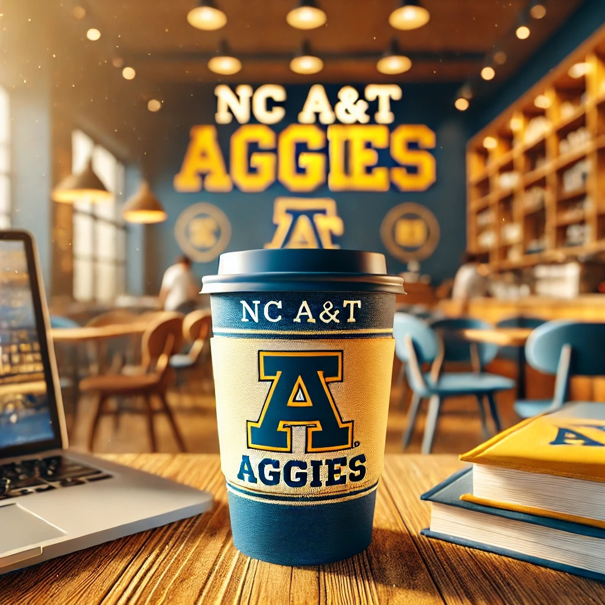

About Us
Welcome to Aggies Coffee House, where each cup of coffee is a celebration of flavor and a tribute to the rich coffee culture. Founded by a group of NC A&T students, our coffee house has quickly become a cornerstone of the students community here at NC A&T, offering a warm, inviting atmosphere that sparks creativity and conversation.
Our mission is to provide a unique coffee experience by selecting the finest beans, roasting them to perfection, and crafting beverages that delight the senses. Our baristas are artists, their techniques refined through rigorous training and a deep passion for coffee excellence. Whether you're a coffee aficionado or trying specialty coffee for the first time, we tailor each visit to your tastes, ensuring an exceptional experience every time.
Beyond coffee, we're committed to community engagement. Aggies Coffee House isn't just a place to grab a coffee; it's a venue where local artists showcase their talents during open mic nights, and where we host community-driven events like poetry readings and music sessions. Our walls are adorned with works by local artists, reflecting our dedication to supporting and celebrating the local arts scene.
Our menu features not only a wide array of specialty coffees but also gourmet desserts and snacks sourced from local vendors. From the rich, decadent chocolate cake to our famous blueberry scones, every item is selected to complement our beverages perfectly. We believe in the power of great food and great coffee shared among friends and strangers alike, turning every visit into an opportunity for discovery and enjoyment.
Thank you for choosing Aggies Coffee House. Whether you're here to study, meet friends, or just enjoy a quiet moment alone with your coffee, we're delighted to share our passion with you. Visit us and become a part of our ever-growing coffee community.
Visit us to check out our:
- Specialty Coffee
- Gourmet Deserts
- Music and Poetry Readings
- Open Mic Night
Our Commitment to Sustainability

At Aggies Coffee House, we believe that great coffee should not come at the expense of our planet. Our commitment to sustainability is woven into every aspect of our operations, from responsibly sourced beans to eco-friendly practices in our shop. We strive to make a positive impact on the environment while delivering exceptional products and services to our customers.
We source our coffee beans from local and international farmers who practice sustainable farming, ensuring that every cup of coffee served supports environmentally sound practices. By engaging directly with these farmers, we not only guarantee the quality and freshness of our coffee but also support fair trade practices that benefit farming communities.
Our coffee shop reduces waste by using biodegradable cups and packaging, and we encourage our customers to bring their own reusable cups by offering a discount on their coffee. We have also implemented a composting program that repurposes coffee grounds and organic waste from our kitchen into compost that enriches local community gardens.
Energy conservation is another crucial aspect of our sustainability efforts. Our shop utilizes energy-efficient appliances and lighting, and we actively work to minimize water usage. We are continuously exploring innovative ways to further reduce our carbon footprint and promote sustainability in every corner of our business.
Beyond environmental responsibility, we are committed to giving back to the community that supports us. We partner with local organizations to host educational events about sustainability, and we participate in initiatives that promote environmental awareness. Each year, a portion of our profits is donated to environmental charities that work tirelessly to protect our planet.
At Aggies Coffee House, sustainability is not just a policy; it's a promise. We are dedicated to making a difference, serving as a role model in our community, and inspiring others to join us in our journey towards a more sustainable future.
Community Involvement and Events

At Aggies Coffee House, we believe in the power of community. We are more than just a place to get great coffee; we are a hub for community activities and a supporter of local causes. Our commitment to community involvement is fundamental to our identity, and we are proud to host a variety of events that bring people together and celebrate local talent.
Each month, we organize events that range from local art exhibitions and live music nights to educational workshops and charity fundraisers. These events provide a platform for local artists, musicians, and speakers to share their talents and stories, enriching our community's cultural landscape.
We also collaborate with local schools, charities, and organizations on events that educate and mobilize the community on important issues. From sustainability workshops to community clean-up days, we are committed to making a positive impact.
Highlights of our annual events include:
- The "Aggies Artisan Fair" – a showcase for local crafts and artworks.
- "Coffee with a Cause" – where a portion of every coffee sold supports a local charity.
- Monthly "Poetry and Pastry Night" – a cozy evening of poetry readings accompanied by our delicious homemade pastries.
We invite you to join us at our next event and experience the warmth and vibrancy of our community engagements. Keep an eye on our social media pages and website for announcements on upcoming events!
Location
Aggies Coffee House is located at402 Laurel Street
Greensboro, NC 27405. See Google Maps for directions.
Contact Us
You can contact us byEmail: aggiescoffee@aggies.ncat.edu
Phone: (336)123-4567